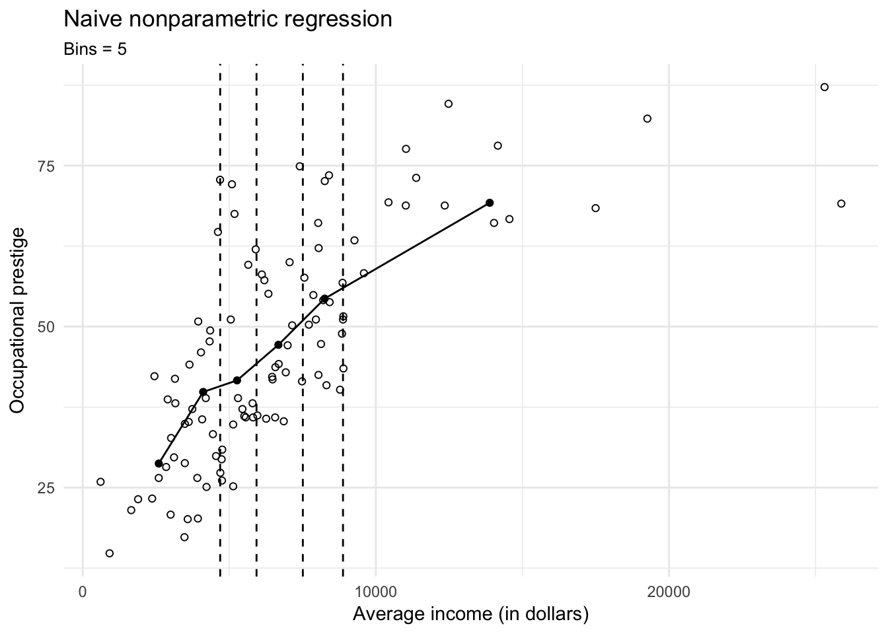
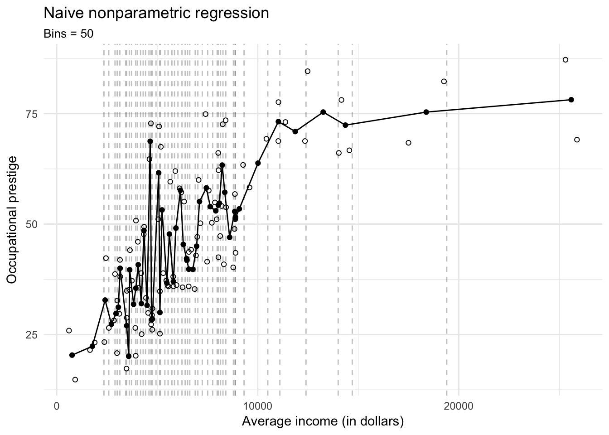
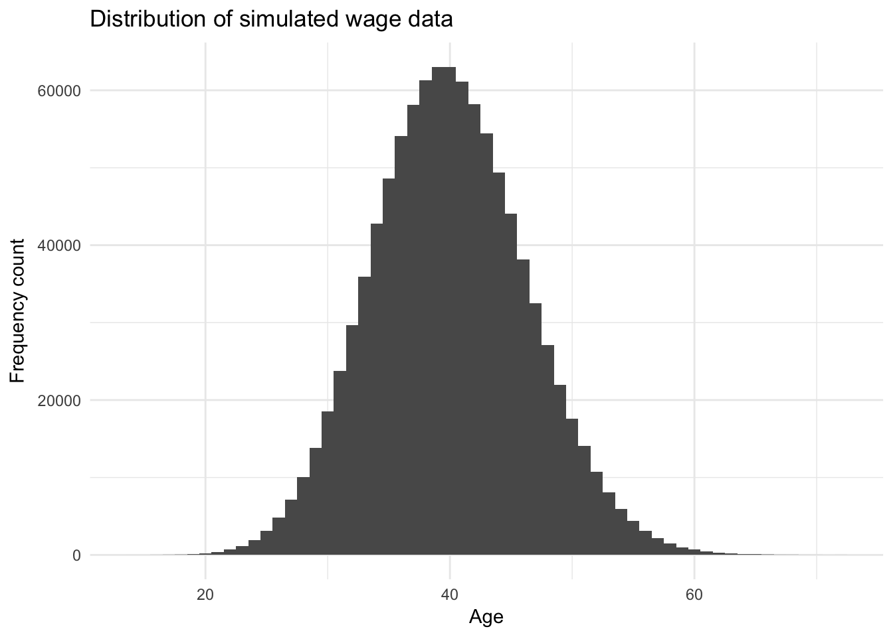
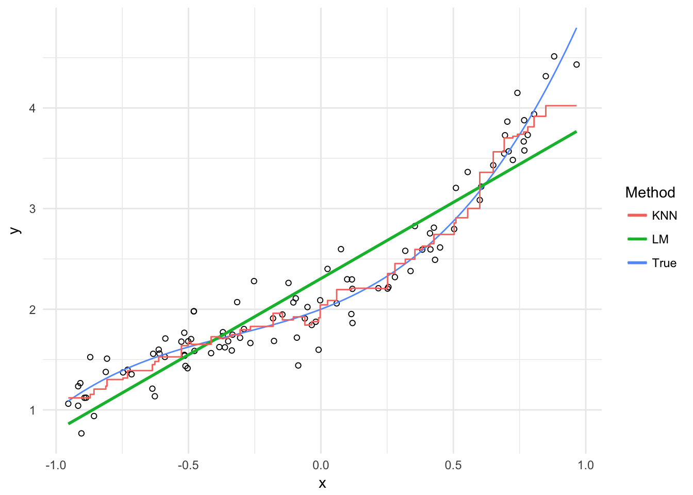
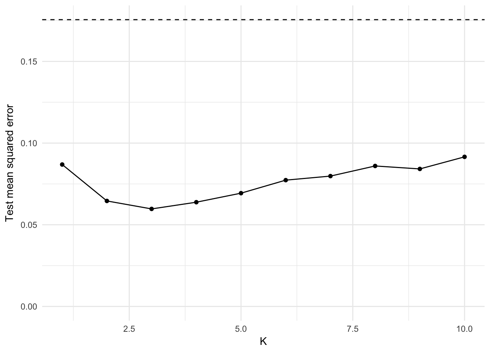
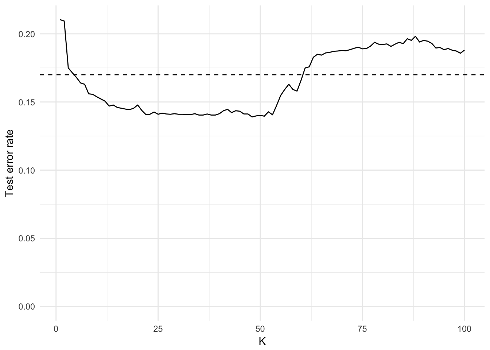
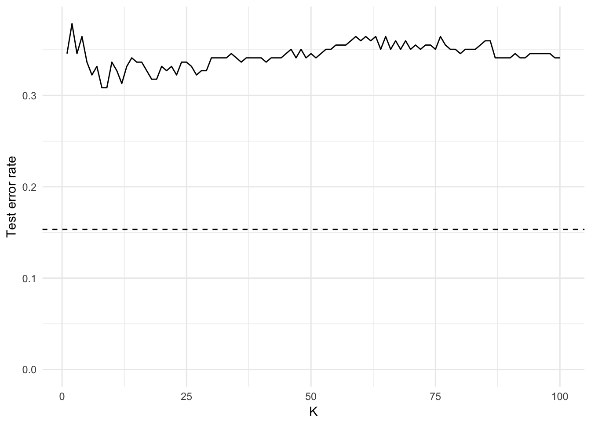

Statistical learning: non-parametric methods
MACS 30100 - Perspectives on Computational Modeling
Objectives
- Define non-parametric methods and distinguish from parametric methods
- Introduce histograms as a non-parametric procedure
- Define kernel density estimation and review different types of kernels
- Introduce pure non-parametric regression
- Demonstrate and evaluate \(K\)-nearest neighbors regression
- Demonstrate and evaluate \(K\)-nearest neighbors classification
library(tidyverse)
library(forcats)
library(broom)
library(modelr)
library(stringr)
library(ISLR)
library(titanic)
library(rcfss)
library(pROC)
library(grid)
library(gridExtra)
library(FNN)
library(kknn)
options(digits = 3)
set.seed(1234)
theme_set(theme_minimal())Estimating functional forms
Parametric methods
Parametric methods involve a two-stage process:
- First make an assumption about the functional form of \(f\). For instance, OLS assumes that the relationship between \(X\) and \(Y\) is linear. This greatly simplifies the problem of estimating the model because we know a great deal about the properties of linear models.
- After a model has been selected, we need to fit or train the model using the actual data. We demonstrated this previously with ordinary least squares. The estimation procedure minimizes the sum of the squares of the differences between the observed responses \(Y\) and those predicted by a linear function \(\hat{Y}\).
# get advertising data
(advertising <- read_csv("data/Advertising.csv") %>%
tbl_df() %>%
# remove id column
select(-X1))## # A tibble: 200 × 4
## TV Radio Newspaper Sales
## <dbl> <dbl> <dbl> <dbl>
## 1 230.1 37.8 69.2 22.1
## 2 44.5 39.3 45.1 10.4
## 3 17.2 45.9 69.3 9.3
## 4 151.5 41.3 58.5 18.5
## 5 180.8 10.8 58.4 12.9
## 6 8.7 48.9 75.0 7.2
## 7 57.5 32.8 23.5 11.8
## 8 120.2 19.6 11.6 13.2
## 9 8.6 2.1 1.0 4.8
## 10 199.8 2.6 21.2 10.6
## # ... with 190 more rows# plot separate facets for relationship between ad spending and sales
plot_ad <- advertising %>%
gather(method, spend, -Sales) %>%
ggplot(aes(spend, Sales)) +
facet_wrap(~ method, scales = "free_x") +
geom_point() +
labs(x = "Spending (in thousands of dollars)")method_model <- function(df) {
lm(Sales ~ spend, data = df)
}
ad_pred <- advertising %>%
gather(method, spend, -Sales) %>%
group_by(method) %>%
nest() %>%
mutate(model = map(data, method_model),
pred = map(model, broom::augment)) %>%
unnest(pred)
plot_ad +
geom_smooth(method = "lm", se = FALSE) +
geom_linerange(data = ad_pred,
aes(ymin = Sales, ymax = .fitted),
color = "blue",
alpha = .5) 
This is only one possible estimation procedure, but is popular because it is relatively intuitive. This model-based approach is referred to as parametric, because it simplifies the problem of estimating \(f\) to estimating a set of parameters in the function:
\[Y = \beta_0 + \beta_{1}X_1\]
where \(Y\) is the sales, \(X_1\) is the advertising spending in a given medium (newspaper, radio, or TV), and \(\beta_0\) and \(\beta_1\) are parameters defining the intercept and slope of the line.
The downside to parametric methods is that they assume a specific functional form of the relationship between the variables. Sometimes relationships really are linear - often however they are not. They could be curvilinear, parbolic, interactive, etc. Unless we know this a priori or test for all of these potential functional forms, it is possible our parametric method will not accurately summarize the relationship between \(X\) and \(Y\).
Non-parametric methods
Non-parametric methods do not make explicit assumptions about the functional form of \(f\). Instead, they use the data itself to estimate \(f\) so that it gets as close as possible to the data points without becoming overly complex. By avoiding any assumptions about the functional form, non-parametric methods avoid the issues caused by parametic models. However, by doing so non-parametric methods require a large set of observations to avoid overfitting the data and obtain an accurate estimate of \(f\).
Defining non-parametric
Non-parametric covers two types of statistical techniques:
- Techniques that do not rely on data belonging to any particular distribution. Distribution free methods do not rely on assumptions that data are drawn from a specified probability distribution and can include non-parametric descriptive statistics, statistical models, inference, and statistical tests.
- Techniques that do not assume that the structure of a model is fixed. As the data becomes more complex, the model itself gets larger to accomodate this complexity. Individual variables are assumed to belong to a parametric distribution, and assumptions about the type of connections among variables are also made. So for example, many of the non-linear methods we covered previously are in fact non-parametric estimation procedures. We will review these methods later and explicitly identify what makes them parametric or non-parametric.
Today we focus on non-parametric procedures for modeling data, however there is also a wide range of non-parametric methods for conducting statistical inference.
Non-parametric methods for description
Non-parametric methods can be used for describing data. That is, examining individual variables at a basic level without performing higher-level modeling approaches in an effort to summarize the relationship between variables or generate predictions.
Really basic stuff
We can think of some really basic descriptive statistics as nonparametric estimators. They assume random variables are drawn from a probability distribution, but make no assumptions as to which distribution.
Measures of central tendency
These statistics measure the central or typical value of a probability distribution.
- Median - the value separating the data into two halves each containing 50% of the observations
- Mode - the value that appears most often in a data set
Arithmetic mean
\[\bar{x} = \frac{1}{n} \sum_{i = 1}^n x_i\]
- Note that means can also be parameters in probability distributions, such as the Normal distribution which contains a mean \(\mu\) and variance \(\sigma^2\).
Measures of dispersion
These measure the extent to which a distribution is stretched or squeezed. The variance is the expectation of the squared deviation of a random variable from its mean:
\[E[X] = \mu\]
\[\text{Var}(X) \equiv \sigma^2 = E[X^2] - (E[X])^2\]
While deviation is a measure of the difference between the observed value of a variable and some other value (often that variable’s mean).
- Standard deviation - quantifies the amount of variation or dispersion in a set of data values
\[\sigma = \sqrt{E[X^2] - (E[X])^2}\]
Median absolute deviation - robust measure of the variability of a univariate sample of data
\[MAD = \text{median}(|X_i - \text{median}(X)|)\]
- The median of the absolute deviations from the data’s median
- MAD is more resilient to outliers in the data, because it is derived from medians and not arithmetic means
Histograms
Histograms are graphical representations of the distribution of data. They attempt to estimate the probability distribution of a continuous variable by dividing the range of the variable into equal-width intervals called bins, counting the number of observations falling into each bin, and displaying the frequency counts in a bar chart.
infant <- read_csv("data/infant.csv") %>%
# remove non-countries
filter(is.na(`Value Footnotes`) | `Value Footnotes` != 1) %>%
select(`Country or Area`, Year, Value) %>%
rename(country = `Country or Area`,
year = Year,
mortal = Value)ggplot(infant, aes(mortal)) +
geom_histogram(bins = 10, origin = 0) +
labs(title = "Histogram of infant mortality rate for 195 nations",
subtitle = "10 bins, origin = 0",
x = "Infant mortality rate (per 1,000)",
y = "Frequency")
ggplot(infant, aes(mortal)) +
geom_histogram(bins = 10, origin = -5) +
labs(title = "Histogram of infant mortality rate for 195 nations",
subtitle = "10 bins, origin = -5",
x = "Infant mortality rate (per 1,000)",
y = "Frequency")
Both histograms above use bins of width 10 but differ in their origin, or the starting point for the histogram. The first graph uses bins starting at 0 (e.g. 0 to 10, 10 to 20, 20 to 30), whereas the second graph uses bins starting at -5 (e.g. -5 to 5, 5 to 15, 15 to 25). Determining the optimal binwidth and origin point can be trial-and-error, though there are more complex options to try and optimize these values.
Density estimation
In fact histograms are strongly related to nonparametric density estimation. Unlike histograms, which divide the data into discrete bins, nonparametric density estimation attempts to estimate the probability density function (PDF) of a variable based on a sample. Since the PDF is a smooth, continuous function, we can think of it like a smoothing histogram.
Histograms can also be thought of as simple density estimators, though rather than each bar representing a frequency count having it represent the proportion of observations in the sample that fall into the given bin.
\(x_0\) is the origin and each of the \(m\) bins has width \(2h\). The end points of each bin are at \(x_0, x_0 + 2h, x_o + 4h, \dots, x_0 + 2mh\). An observation \(X_i\) falls in the \(j\)th bin if:
\[x_0 + 2(j - 1)h \leq X_i < x_0 + 2jh\]
Therefore the histogram estimator of the density at any \(x\) value located in the \(j\)th bin is based the number of observations that fall into that bin:
\[\hat{p}(x) = \frac{\#_{i = 1}^n [x_0 + 2(j - 1)h \leq X_i < x_0 + 2jh]}{2nh}\]
where \(\#\) is the counting operator. If we remove the arbitrary origin \(x_0\) by counting locally within a continuously moving window of half-width \(h\) centered at \(x\):
\[\hat{p}(x) = \frac{\#_{i = 1}^n [x_0 + 2(j - 1)h \leq X_i < x_0 + 2jh]}{2nh}\]
We can generalize this equation to evaluate \(\hat{p}(x)\) at a large number of \(x\) values covering the range of \(X\) by applying a locally weighted averaging function using a rectangular weight function:
\[\hat{p}(x) = \frac{1}{nh} \sum_{i = 1}^n W \left( \frac{x - X_i}{h} \right)\]
where
\[W(z) = \begin{cases} \frac{1}{2} & \text{for } |z| < 1 \\ 0 & \text{otherwise} \\ \end{cases}\]
\[z = \frac{x - X_i}{h}\]
This naive estimator is very similar to a histogram that uses bins of width \(2h\) but has no fixed origin.
ggplot(infant, aes(mortal)) +
geom_density(kernel = "rectangular") +
labs(title = "Naive density estimator of infant mortality rate for 195 nations",
x = "Infant mortality rate (per 1,000)",
y = "Density")
The downside to the rectangular weighting function is that the resulting density plot is not very clean and smooth. As observations enter and exit the window defined by the rectangle \(W(z)\), the resulting estimator is rough.
The rectangular weighting function produces a density estimate which covers an area of \(1\); that is, integrating over the range of \(X\) for \(\hat{p}(x)\) yields a value of 1. Any function that has this property (such as a probability density function) can be used as a weight function.
Another term for a weight function is a kernel, which should sound quite familiar as they are an important component of support vector machines. We should select a kernel that is smooth, symmertric, and unimodal to smooth out these rough edges of the naive density estimator. Therefore we can write the general density estimator as:
\[\hat{x}(x) = \frac{1}{nh} \sum_{i = 1}^k K \left( \frac{x - X_i}{h} \right)\]
and substitute for \(K(z)\) any other kernel.
Gaussian kernel
\[K(z) = \frac{1}{\sqrt{2 \pi}}e^{-\frac{1}{2} z^2}\]
Not to be confused with the (Gaussian) radial basis function kernel.
x <- rnorm(1000)
qplot(x, geom = "blank") +
stat_function(fun = dnorm) +
labs(title = "Gaussian (normal) kernel",
x = NULL,
y = NULL)
ggplot(infant, aes(mortal)) +
geom_density(kernel = "gaussian") +
labs(title = "Gaussian density estimator of infant mortality rate for 195 nations",
x = "Infant mortality rate (per 1,000)",
y = "Density")
Now we have a much smoother density function.
Rectangular (uniform) kernel
\[K(z) = \frac{1}{2} \mathbf{1}_{\{ |z| \leq 1 \} }\]
where \(\mathbf{1}_{\{ |z| \leq 1 \} }\) is an indicator function that takes on the value of 1 if the condition is true (\(|z| \leq 1\)) or 0 if the condition is false. This is the naive density estimator identified previously.
x <- runif(1000, -1.5, 1.5)
x_lines <- tribble(
~x, ~y, ~xend, ~yend,
-1, 0, -1, .5,
1, 0, 1, .5
)
qplot(x, geom = "blank") +
stat_function(fun = dunif, args = list(min = -1), geom = "step") +
# geom_segment(data = x_lines, aes(x = x, y = y, xend = xend, yend = yend)) +
labs(title = "Rectangular kernel",
x = NULL,
y = NULL)
ggplot(infant, aes(mortal)) +
geom_density(kernel = "rectangular") +
labs(title = "Rectangular density estimator of infant mortality rate for 195 nations",
x = "Infant mortality rate (per 1,000)",
y = "Density")
Triangular kernel
\[K(z) = (1 - |z|) \mathbf{1}_{\{ |z| \leq 1 \} }\]
triangular <- function(x) {
(1 - abs(x)) * ifelse(abs(x) <= 1, 1, 0)
}
qplot(x, geom = "blank") +
stat_function(fun = triangular) +
labs(title = "Triangular kernel",
x = NULL,
y = NULL)
ggplot(infant, aes(mortal)) +
geom_density(kernel = "triangular") +
labs(title = "Triangular density estimator of infant mortality rate for 195 nations",
x = "Infant mortality rate (per 1,000)",
y = "Density")
Quartic (biweight) kernel
\[K(z) = \frac{15}{16} (1 - z^2)^2 \mathbf{1}_{\{ |z| \leq 1 \} }\]
biweight <- function(x) {
(15 / 16) * (1 - x^2)^2 * ifelse(abs(x) <= 1, 1, 0)
}
qplot(x, geom = "blank") +
stat_function(fun = biweight) +
labs(title = "Biweight kernel",
x = NULL,
y = NULL)
ggplot(infant, aes(mortal)) +
geom_density(kernel = "biweight") +
labs(title = "Biweight density estimator of infant mortality rate for 195 nations",
x = "Infant mortality rate (per 1,000)",
y = "Density")
Epanechnikov kernel
\[K(z) = \frac{3}{4} (1 - z^2) \mathbf{1}_{\{ |z| \leq 1 \} }\]
epanechnikov <- function(x) {
(15 / 16) * (1 - x^2)^2 * ifelse(abs(x) <= 1, 1, 0)
}
qplot(x, geom = "blank") +
stat_function(fun = epanechnikov) +
labs(title = "Epanechnikov kernel",
x = NULL,
y = NULL)
ggplot(infant, aes(mortal)) +
geom_density(kernel = "epanechnikov") +
labs(title = "Epanechnikov density estimator of infant mortality rate for 195 nations",
x = "Infant mortality rate (per 1,000)",
y = "Density")
Comparison of kernels
qplot(x, geom = "blank") +
stat_function(aes(color = "Gaussian"), fun = dnorm) +
stat_function(aes(color = "Epanechnikov"), fun = epanechnikov) +
stat_function(aes(color = "Rectangular"), fun = dunif, args = list(min = -1), geom = "step") +
stat_function(aes(color = "Triangular"), fun = triangular) +
stat_function(aes(color = "Biweight"), fun = biweight) +
labs(x = NULL,
y = NULL,
color = NULL) +
theme(legend.position = c(0.04, 1),
legend.justification = c(0, 1),
legend.background = element_rect(fill = "white"))
ggplot(infant, aes(mortal)) +
geom_density(aes(color = "Gaussian"), kernel = "gaussian") +
geom_density(aes(color = "Epanechnikov"), kernel = "epanechnikov") +
geom_density(aes(color = "Rectangular"), kernel = "rectangular") +
geom_density(aes(color = "Triangular"), kernel = "triangular") +
geom_density(aes(color = "Biweight"), kernel = "biweight") +
labs(title = "Density estimators of infant mortality rate for 195 nations",
x = "Infant mortality rate (per 1,000)",
y = "Density",
color = "Kernel") +
theme(legend.position = c(0.96, 1),
legend.justification = c(1, 1),
legend.background = element_rect(fill = "white"))
Selecting the bandwidth \(h\)
Even within the same kernel, different values for the bandwidth \(h\) will produce different density estimates because the moving window used to include observations in the local estimate will change.
ggplot(infant, aes(mortal)) +
geom_density(kernel = "gaussian", adjust = 5) +
geom_density(kernel = "gaussian", adjust = 1, linetype = 2) +
geom_density(kernel = "gaussian", adjust = 1/5, linetype = 3) +
labs(title = "Gaussian density estimators of infant mortality rate for 195 nations",
subtitle = "Three different bandwidth parameters",
x = "Infant mortality rate (per 1,000)",
y = "Density")
If the underlying density of the sample is normal with standard deviation \(\sigma\), then for the Gaussian kernel estimation the most efficient bandwidth \(h\) will be:
\[h = 0.9 \sigma n^{-1 / 5}\]
As the sample size increases, the optimal window narrower and permits finer detail than a smaller sample. Of course we don’t actually know the population standard deviation \(\sigma\). Instead we know the sample standard deviation \(s\). If the underlying density is normal, we could just substitute \(s\) as an unbiased estimate for \(\sigma\). Of course the problem is that we assumed the underlying density is normal. If this is not true, then it’s possible that the sample standard deviation is inflated. In that case, we can adjust by using an “adaptive” estimator of spread:
\[A = \min \left( S, \frac{IQR}{1.349} \right)\]
where \(IQR\) is the interquartile range of the sample and 1.349 is the interquartile range of the standard normal distribution \(N(0,1)\).
This is the default method for calculating the bandwidth with a Gaussian kernel using the density() function in R. Other kernels use different functions for determining the optimal value for \(h\).
Non-parametric regression
Naive non-parametric regression
Suppose we have detailed information wages and education. We don’t have data for the entire population, but we do have observations for one million employed Americans:
n <- 1000000
wage <- data_frame(educ = rpois(n, lambda = 12),
age = rpois(n, lambda = 40),
prestige = rpois(n, lambda = 3)) %>%
mutate(educ = ifelse(educ > 25, 25, educ),
wage = 10 + 2 * educ + .5 * age + 5 * prestige + rnorm(n, 0, 3))
ggplot(wage, aes(wage)) +
geom_histogram(binwidth = 5) +
labs(title = "Histogram of simulated income data",
subtitle = "Binwidth = 5",
x = "Income, in thousands of dollars",
y = "Frequency count")
If we want to estimate the income for an individual given their education level \((0, 1, 2, \dots, 25)\), we could estimate the conditional distribution of income for each of these values:
\[\mu = E(\text{Income}|\text{Education}) = f(\text{Education})\]
For each level of education, the conditional (or expected) income would be the mean or median of all individuals in the sample with the same level of education.
wage %>%
group_by(educ) %>%
summarize(mean = mean(wage),
sd = sd(wage)) %>%
ggplot(aes(educ, mean, ymin = mean - sd, ymax = mean + sd)) +
geom_errorbar() +
geom_point() +
labs(title = "Conditional income, by education level",
subtitle = "Plus/minus SD",
x = "Education level",
y = "Income, in thousands of dollars")
wage %>%
filter(educ == 12) %>%
ggplot(aes(wage)) +
geom_density() +
geom_vline(xintercept = mean(wage$wage[wage$educ == 12]), linetype = 2) +
labs(title = "Conditional distribution of income for education = 12",
subtitle = str_c("Mean income = ", formatC(mean(wage$wage[wage$educ == 12]), digits = 3)),
x = "Income, in thousands of dollars",
y = "Frequency count")
Imagine instead that we we have \(X\) and \(Y\), two continuous variables from a sample of a population, and we want to understand the relationship between the variables. Specifically, we want to use our knowledge of \(X\) to predict \(Y\). Therefore what we want to know is the mean value of \(Y\) as a function of \(X\) in the population of individuals from whom the sample was drawn:
\[\mu = E(Y|x) = f(x)\]
Unfortunately because \(X\) is continuous, it is unlikely that we would draw precisely the same values of \(X\) for more than a single observation. Therefore we cannot directly calculate the conditional distribution of \(Y\) given \(X\), and therefore cannot calculate conditional means. Instead, we can divide \(X\) into many narrow intervals (or bins), just like we would for a histogram. Within each bin we can estimate the conditional distribution of \(Y\) and estimate the conditional mean of \(Y\) with great precision.
If we have fewer observations, then we have to settle for fewer bins and less precision in our estimates. Here we use data on the average income of 102 different occupations in Canada and their relationship to occupational prestige (measured continuously):
# get data
prestige <- read_csv("data/prestige.csv")# bin into 5 and get means
prestige_bin <- prestige %>%
mutate(bin = cut_number(income, 6)) %>%
group_by(bin) %>%
summarize(prestige = mean(prestige),
income = mean(income))
# get cutpoints
labs <- levels(prestige_bin$bin)
cutpoints <- c(as.numeric( sub("\\((.+),.*", "\\1", labs) ),
as.numeric( sub("[^,]*,([^]]*)\\]", "\\1", labs) )) %>%
unique %>%
sort %>%
.[2:(length(.)-1)] %>%
as_tibble
ggplot(prestige, aes(income, prestige)) +
geom_point(shape = 1) +
geom_line(data = prestige_bin) +
geom_point(data = prestige_bin) +
geom_vline(data = cutpoints, aes(xintercept = value), linetype = 2) +
labs(title = "Naive nonparametric regression",
subtitle = "Bins = 5",
x = "Average income (in dollars)",
y = "Occupational prestige")
The \(X\)-axis is carved into 5 bins with roughly 20 observations in each bin. The line is a naive nonparametric regression line that is calculated by connecting the points defined by the conditional variable means \(\bar{Y}\) and the explanatory variable means \(\bar{X}\) in the five intervals.
Just like ordinary least squares regression (OLS), this regression line also suffers from bias and variance. If the actual relationship between prestige and income is non-linear within a bin, then our estimate of the conditional mean \(\bar{Y}\) will be biased towards a linear relationship. We can minimize bias by making the bins as numerous and narrow as possible:
# bin into 50 and get means
prestige_bin <- prestige %>%
mutate(bin = cut_number(income, 51)) %>%
group_by(bin) %>%
summarize(prestige = mean(prestige),
income = mean(income))
# get cutpoints
labs <- levels(prestige_bin$bin)
cutpoints <- c(as.numeric( sub("\\((.+),.*", "\\1", labs) ),
as.numeric( sub("[^,]*,([^]]*)\\]", "\\1", labs) )) %>%
unique %>%
sort %>%
.[2:(length(.)-1)] %>%
as_tibble
ggplot(prestige, aes(income, prestige)) +
geom_point(shape = 1) +
geom_line(data = prestige_bin) +
geom_point(data = prestige_bin) +
geom_vline(data = cutpoints, aes(xintercept = value), linetype = 2, alpha = .25) +
labs(title = "Naive nonparametric regression",
subtitle = "Bins = 50",
x = "Average income (in dollars)",
y = "Occupational prestige")
But now we have introduced overfitting into the nonparametric regression estimates. In addition, we substantially increased our variance of the estimated conditional sample means \(\bar{Y}\). If we were to draw a new sample, the estimated conditional sample means \(\bar{Y}\) could be widely different from the original model and our resulting estimates of the conditional sample means will be highly variable.
Naive nonparametric regression is a consistent estimator of the population regression curve as the sample size increases. As \(n \rightarrow \infty\), we can shrink the size of the individual intervals and still have sizeable numbers of observations in each interval. In the limit, we have an infinite number of intervals and infinite number of observations in each interval, so the naive nonparametric regression line and the population regression line are identical.
As a practical consideration, if our sample size \(n\) is truly large, then naive nonparametric regression could be a good estimation procedure. However as we introduce multiple explanatory variables into the model, the problem starts to blow up. Assume we have three discrete explanatory variables each with 10 possible values:
\[X_1 \in \{1, 2, \dots ,10 \}\] \[X_2 \in \{1, 2, \dots ,10 \}\] \[X_3 \in \{1, 2, \dots ,10 \}\]
There are then \(10^3 = 1000\) possible combinations of the explanatory variables and \(1000\) conditional expectations of \(Y\) given \(X\):
\[\mu = E(Y|x_1, x_2, x_3) = f(x_1, x_2, x_3)\]
In order to accurate estimate conditional expectations for each category, we would need substantial numbers of observations for every combination of \(X\). This would require a sample size far greater than most social scientists have the resources to collect.
Let’s return to our simulated wage data. Our dataset contains information on education, age, and job prestige:
ggplot(wage, aes(educ)) +
geom_histogram(binwidth = 1) +
labs(title = "Distribution of simulated wage data",
x = "Education",
y = "Frequency count")
ggplot(wage, aes(age)) +
geom_histogram(binwidth = 1) +
labs(title = "Distribution of simulated wage data",
x = "Age",
y = "Frequency count")
ggplot(wage, aes(prestige)) +
geom_histogram(binwidth = 1) +
labs(title = "Distribution of simulated wage data",
x = "Job prestige",
y = "Frequency count")
Can we estimate naive nonparametric regression on this dataset with \(N = 1,000,000\)?
wage_np <- wage %>%
group_by(educ, age, prestige) %>%
summarize(wage_mean = mean(wage),
wage_sd = sd(wage),
n = n()) %>%
ungroup %>%
complete(educ, age, prestige, fill = list(wage_mean = NA,
wage_sd = NA,
n = 0))
# number of unique combos
wage_unique <- nrow(wage_np)
# n for each unique combo
ggplot(wage_np, aes(n)) +
geom_density() +
labs(title = "Naive nonparametric regression of simulated wage data",
x = "Number of observations for each unique combination",
y = "Density")
Even on a dataset with \(1,000,000\) observations, for the vast majority of the potential combinations of variables we have zero observations from which to generate expected values. What if we instead drew \(10,000,000\) observations from the same data generating process?
n <- 10000000
wage10 <- data_frame(educ = rpois(n, lambda = 12),
age = rpois(n, lambda = 40),
prestige = rpois(n, lambda = 3)) %>%
mutate(educ = ifelse(educ > 25, 25, educ),
wage = 10 + 2 * educ + .5 * age + 5 * prestige + rnorm(n, 0, 3))
wage10_np <- wage10 %>%
group_by(educ, age, prestige) %>%
summarize(wage_mean = mean(wage),
wage_sd = sd(wage),
n = n()) %>%
ungroup %>%
complete(educ, age, prestige, fill = list(wage_mean = NA,
wage_sd = NA,
n = 0))
# number of unique combos
wage10_unique <- nrow(wage10_np)
# n for each unique combo
ggplot(wage10_np, aes(n)) +
geom_density() +
labs(title = "Naive nonparametric regression of simulated wage data",
x = "Number of observations for each unique combination",
y = "Density")
Unless your dataset is extremely large or you have a small handful of variables with a low number of unique values, naive nonparametric estimation will not be effective.
\(K\)-nearest neighbors regression
An alternative, but related, method is called \(K\)-nearest neighbors regression (KNN regression). Rather than binning the data into discrete and fixed intervals, KNN regression uses a moving average to generate the regression line. Given a value for \(K\) and a prediction point \(x_0\), KNN regression identifies the \(K\) training observations nearest to the prediction point \(x_0\), represented by \(N_0\) and estimates \(f(x_0)\) as the average of all the training responses in \(N_0\):
\[\hat{f}(x_0) = \frac{1}{K} \sum_{x_i \in N_0} y_i\]
With \(K=1\), the resulting KNN regression line will fit the training observations extraordinarily well.
prestige_knn1 <- knn.reg(select(prestige, income), y = prestige$prestige,
test = select(prestige, income), k = 1)
prestige %>%
mutate(pred = prestige_knn1$pred) %>%
ggplot(aes(income, prestige)) +
geom_point() +
geom_step(aes(y = pred)) +
labs(title = "1-nearest neighbor regression",
x = "Income (in dollars)",
y = "Occupational prestige")
Perhaps a bit too well. Compare this to \(K=9\):
prestige_knn9 <- knn.reg(select(prestige, income), y = prestige$prestige,
test = select(prestige, income), k = 9)
prestige %>%
mutate(pred = prestige_knn9$pred) %>%
ggplot(aes(income, prestige)) +
geom_point() +
geom_step(aes(y = pred)) +
labs(title = "9-nearest neighbor regression",
x = "Income (in dollars)",
y = "Occupational prestige")
This regression line averages over the nine nearest observations; while still a step function, it is smoother than \(K=1\). Small values for \(K\) provide low bias estimates of the training observations but high variance. Large values for \(K\) provide low variance but higher bias by masking some of the structure of \(f(X)\).
Parametric methods such as linear regression are superior to non-parametric methods such as KNN regression when the parametric approach accurately assumes the true functional form of \(f\).
sim <- data_frame(x = runif(100, -1,1),
y = 2 + x + rnorm(100, 0, .2))
sim_knn9 <- knn.reg(select(sim, x), y = sim$y,
test = select(sim, x), k = 9)
sim %>%
mutate(pred = sim_knn9$pred) %>%
ggplot(aes(x, y)) +
geom_point(shape = 1) +
geom_abline(aes(color = "True"), intercept = 2, slope = 1) +
geom_smooth(aes(color = "LM"), method = "lm", se = FALSE) +
geom_step(aes(y = pred, color = "KNN")) +
labs(color = "Method")
Here we simulate data from a linear relationship:
\[f(x) = 2 + x + \epsilon_i\]
The black line represents the true model, the blue line represents the linear regression model, and the red line represents the 9-nearest neighbor regression line. As we can see, the linear model does a great job approximating the true model because we have defined the relationship to be linear and that is what OLS attempts to estimate. The KNN line is too jumpy and contours too closely to the training data to capture the true relationship.
# estimate test MSE for LM and KNN models
sim_test <- data_frame(x = runif(100, -1,1),
y = 2 + x + rnorm(100, 0, .2))
mse_lm <- lm(y ~ x, data = sim) %>%
mse(sim_test)
mse_knn <- data_frame(k = 1:10,
knn = map(k, ~ knn.reg(select(sim, x), y = sim$y,
test = select(sim_test, x), k = .)),
mse = map_dbl(knn, ~ mean((sim_test$y - .$pred)^2)))
ggplot(mse_knn, aes(k, mse)) +
geom_line() +
geom_point() +
geom_hline(yintercept = mse_lm, linetype = 2) +
labs(x = "K",
y = "Test mean squared error") +
expand_limits(y = 0)
As \(k\) increases, KNN regression does a better job approximating the linear relationship. Here we can see as \(k\) increases, the test MSE (based on a separate draw of observations from the data generating process) shrinks and approaches the test MSE based on the linear model (the dashed line).
Of course as non-linearity in the true relationship increases, KNN will perform better relative to a parametric model which assumes linearity:
\[f(x) = 2 + x + x^2 + x^3 + \epsilon_i\]
x_cube <- function(x) {
2 + x + x^2 + x^3
}
sim <- data_frame(x = runif(100, -1,1),
y = x_cube(x) + rnorm(100, 0, .2))
sim_knn9 <- knn.reg(select(sim, x), y = sim$y,
test = select(sim, x), k = 9)
sim %>%
mutate(pred = sim_knn9$pred) %>%
ggplot(aes(x, y)) +
geom_point(shape = 1) +
stat_function(aes(color = "True"), fun = x_cube) +
geom_smooth(aes(color = "LM"), method = "lm", se = FALSE) +
geom_step(aes(y = pred, color = "KNN")) +
labs(color = "Method")
# estimate test MSE for LM and KNN models
sim_test <- data_frame(x = runif(100, -1,1),
y = x_cube(x) + rnorm(100, 0, .2))
mse_lm <- lm(y ~ x, data = sim) %>%
mse(sim_test)
mse_knn <- data_frame(k = 1:10,
knn = map(k, ~ knn.reg(select(sim, x), y = sim$y,
test = select(sim_test, x), k = .)),
mse = map_dbl(knn, ~ mean((sim_test$y - .$pred)^2)))
ggplot(mse_knn, aes(k, mse)) +
geom_line() +
geom_point() +
geom_hline(yintercept = mse_lm, linetype = 2) +
labs(x = "K",
y = "Test mean squared error") +
expand_limits(y = 0)
While KNN performs better in the presence of a non-linear relationship, it also performs worse as the number of predictors \(p\) increases. Here we use the same data generating process as before:
\[f(x) = 2 + x + x^2 + x^3 + \epsilon_i\]
But this time generate additional noise parameters, or variables that are not actually included in \(f(x)\) but are included in \(\hat{f}(x)\). Linear regression is more robust to the addition of such parameters and the test MSE increases more slowly as a result. Compare this to the change in test MSE for KNN regression:
sim_nr <- data_frame(x1 = runif(100, -1,1),
y = x_cube(x1) + rnorm(100, 0, .2),
x2 = rnorm(100, 0, 1),
x3 = rnorm(100, 0, 1),
x4 = rnorm(100, 0, 1),
x5 = rnorm(100, 0, 1),
x6 = rnorm(100, 0, 1))
sim_nr_test <- data_frame(x1 = runif(100, -1,1),
y = x_cube(x1) + rnorm(100, 0, .2),
x2 = rnorm(100, 0, 1),
x3 = rnorm(100, 0, 1),
x4 = rnorm(100, 0, 1),
x5 = rnorm(100, 0, 1),
x6 = rnorm(100, 0, 1))
sim_pred_knn <- expand.grid(p = 1:6,
k = 1:10) %>%
as_tibble %>%
mutate(lm = map(p, ~ lm(formula(str_c("y ~ ", str_c("x", seq.int(.), collapse = " + "))),
data = sim_nr)),
mse_lm = map_dbl(lm, ~ mse(., sim_nr_test)),
knn = map2(p, k, ~ knn.reg(select_(sim_nr, .dots = str_c("x", seq.int(.x))),
y = sim_nr$y,
test = select_(sim_nr_test, .dots = str_c("x", seq.int(.x))),
k = .y)),
mse_knn = map_dbl(knn, ~ mean((sim_nr_test$y - .$pred)^2)))
ggplot(sim_pred_knn, aes(k, mse_knn)) +
facet_grid(. ~ p, labeller = labeller(p = label_both)) +
geom_line() +
geom_point() +
geom_hline(aes(yintercept = mse_lm), linetype = 2) +
labs(title = "Test MSE for linear regression vs. KNN",
x = "K",
y = "Test mean squared error") +
expand_limits(y = 0)
We should be able to anticipate this problem. It is the same pitfall of naive nonparametric regression: as the number of predictors increases, the number of dimensions also increases. Spreading 100 observations over \(p=6\) dimensions results in the problem that for many observations, there are no nearby neighbors. The closest neighbor may be extraordinarily far away in \(p\)-dimensional space, so the prediction resulting from averaging across these neighbors is poor.
One alternative to this conundrum is to use a weighting function to weight our KNN estimates based on the distance of the nearby neighbors. For example, the kknn package weights KNN estimates based on the Minkowski distance between points:
\[\text{Distance}(x_i, y_i) = \left( \sum_{i = 1}^n |x_i - y_i| ^p \right)^\frac{1}{p}\]
where \(p\) is the order parameter (not the number of predictors). \(p=1\) results in Manhattan distance, while \(p=2\) is known as Euclidean distance.
sim <- data_frame(x = runif(100, -1,1),
y = x_cube(x) + rnorm(100, 0, .2))
sim_wknn <- kknn(y ~ x, train = sim, test = sim, k = 5)
sim %>%
mutate(pred = sim_wknn[["fitted.values"]]) %>%
ggplot(aes(x, y)) +
geom_point(shape = 1) +
stat_function(aes(color = "True"), fun = x_cube) +
geom_smooth(aes(color = "LM"), method = "lm", se = FALSE) +
geom_step(aes(y = pred, color = "KNN")) +
labs(title = "5-nearest neighbor regression",
subtitle = "Euclidean distance weighting",
color = "Method")
# estimate test MSE for LM and KNN models
sim_test <- data_frame(x = runif(100, -1,1),
y = x_cube(x) + rnorm(100, 0, .2))
mse_lm <- lm(y ~ x, data = sim) %>%
mse(sim_test)
mse_knn <- data_frame(k = 1:10,
knn = map(k, ~ kknn(y ~ x, train = sim, test = sim_test, k = .)),
mse = map_dbl(knn, ~ mean((sim_test$y - .$fitted.values)^2)))
ggplot(mse_knn, aes(k, mse)) +
geom_line() +
geom_point() +
geom_hline(yintercept = mse_lm, linetype = 2) +
labs(x = "K",
y = "Test mean squared error") +
expand_limits(y = 0)
Let’s compare the robustness of KNN vs. weighted KNN using the previous example with random noise parameters.
sim_pred_wknn <- sim_pred_knn %>%
mutate(wknn = map2(p, k, ~ kknn(formula(str_c("y ~ ",
str_c("x", seq.int(.x), collapse = " + "))),
train = sim_nr, test = sim_nr_test, k = .y)),
mse_wknn = map_dbl(wknn, ~ mean((sim_nr_test$y - .$fitted.values)^2)))
sim_pred_lm <- sim_pred_wknn %>%
select(p, k, mse_lm) %>%
distinct
sim_pred_wknn %>%
select(p, k, contains("mse"), -mse_lm) %>%
gather(method, mse, contains("mse")) %>%
mutate(method = str_replace(method, "mse_", "")) %>%
mutate(method = factor(method, levels = c("knn", "wknn"),
labels = c("KNN", "Weighted KNN"))) %>%
ggplot(aes(k, mse, color = method)) +
facet_grid(. ~ p, labeller = labeller(p = label_both)) +
geom_line() +
geom_point() +
geom_hline(data = sim_pred_lm, aes(yintercept = mse_lm), linetype = 2) +
labs(title = "Test MSE for linear regression vs. KNN",
subtitle = "Traditional and weighted KNN",
x = "K",
y = "Test mean squared error",
method = NULL) +
expand_limits(y = 0) +
theme(legend.position = "bottom")
Estimating KNN on simulated wage data
# split into train/test set
wage_split <- resample_partition(wage, p = c("test" = .5, "train" = .5))
wage_train <- as_tibble(wage_split$train)
wage_test <- as_tibble(wage_split$test)
# estimate test MSE for LM and KNN models
mse_lm <- lm(wage ~ educ + age + prestige, data = wage_train) %>%
mse(wage_test)
mse_knn <- data_frame(k = c(1:10, seq(20, 100, by = 10)),
knn = map(k, ~ knn.reg(select(wage_train, -wage), y = wage_train$wage,
test = select(wage_test, -wage), k = .)),
mse = map_dbl(knn, ~ mean((wage_test$wage - .$pred)^2)))
ggplot(mse_knn, aes(k, mse)) +
geom_line() +
geom_point() +
geom_hline(yintercept = mse_lm, linetype = 2) +
labs(title = "KNN on simulated wage data",
x = "K",
y = "Test mean squared error") +
expand_limits(y = 0)
KNN on Biden
biden <- read_csv("data/biden.csv")
# split into train/test set
biden_split <- resample_partition(biden, p = c("test" = .3, "train" = .7))
biden_train <- as_tibble(biden_split$train)
biden_test <- as_tibble(biden_split$test)
# estimate test MSE for LM and KNN models
mse_lm <- lm(biden ~ ., data = biden_train) %>%
mse(biden_test)
mse_knn <- data_frame(k = c(1:10, seq(20, 100, by = 10)),
knn = map(k, ~ knn.reg(select(biden_train, -biden), y = biden_train$biden,
test = select(biden_test, -biden), k = .)),
mse = map_dbl(knn, ~ mean((biden_test$biden - .$pred)^2)))
ggplot(mse_knn, aes(k, mse)) +
geom_line() +
geom_point() +
geom_hline(yintercept = mse_lm, linetype = 2) +
labs(title = "KNN for Biden",
x = "K",
y = "Test mean squared error") +
expand_limits(y = 0)
# estimate test MSE for LM and WKNN models
mse_lm <- lm(biden ~ ., data = biden_train) %>%
mse(biden_test)
mse_knn <- data_frame(k = c(1:10, seq(20, 100, by = 10)),
knn = map(k, ~ kknn(biden ~ .,
train = biden_train, test = biden_test, k = .)),
mse = map_dbl(knn, ~ mean((sim_test$y - .$fitted.values)^2)))
ggplot(mse_knn, aes(k, mse)) +
geom_line() +
geom_point() +
geom_hline(yintercept = mse_lm, linetype = 2) +
labs(title = "Weighted KNN for Biden",
x = "K",
y = "Test mean squared error") +
expand_limits(y = 0)
Relaxing the non-linearity assumption in linear regression
We previously discussed how to relax the non-linearity assumption of linear regression. Which of those methods were parametric vs. non-parametric? Generally speaking, any of the methods that relied upon local averaging to estimate the regression model would be considered non-parametric. While these methods include parametric components, these are fit at the local-level. The global structure of the relationship between the predictor(s) and the response variable are not assumed by any specific functional form.
Likewise, decision trees and SVMs1 are also non-parametric methods because they do not assume a global structure to the data. Certain variations of SVMs are parametric, primarily the support vector classifier, because they assume the separating hyperplane assumes a linear functional form. However by introducing kernels into the model (as we discussed above), SVMs relax the linearity assumption sufficiently to become non-parametric models.
Parametric methods
- Linear regression
- Logistic regression
- Generalized linear models (GLMs)
- Polynomial regression
- Step functions
Non-parametric methods
- Regression splines
- Smoothing splines
- Local regression
- Generalized additive models
- Decision trees
- Bagging/random forest/boosting
- Support vector machines
Non-parametric classification
Bayes decision rule
For classification problems, the test error rate is minimized by a simple classifier that assigns each observation to the most likely class given its predictor values:
\[\Pr(Y = j | X = x_0)\]
where \(x_0\) is the test observation and each possible class is represented by \(J\). This is a conditional probability that \(Y = j\), given the observed predictor vector\(x_0\). This classifier is known as the Bayes classifier. If the response variable is binary (i.e. two classes), the Bayes classifier corresponds to predicting class one if \(\Pr(Y = 1 | X = x_0) > 0.5\), and class two otherwise.
In the simulated example below, the blue lines indicate the Bayes decision boundary. The Bayes classifier’s prediction is determined by this boundary: observations on the blue side would be assigned to the blue class, and observations on the red side are assigned to the red class.
bayes_rule <- function(x1, x2) {
x1 + x1^2 + x2 + x2^2
}
bayes_grid <- expand.grid(x1 = seq(-1, 1, by = .05),
x2 = seq(-1, 1, by = .05)) %>%
as_tibble %>%
mutate(logodds = bayes_rule(x1, x2),
y = logodds > .5,
prob = logit2prob(logodds))
bayes_bound <- bind_rows(mutate(bayes_grid,
prob = prob,
cls = TRUE,
prob_cls = ifelse(y == cls, 1, 0)),
mutate(bayes_grid,
prob = prob,
cls = FALSE,
prob_cls = ifelse(y == cls, 1, 0)))
sim_bayes <- data_frame(x1 = runif(200, -1, 1),
x2 = runif(200, -1, 1),
logodds = bayes_rule(x1, x2) + rnorm(200, 0, .5),
y = logodds > .5,
y_actual = bayes_rule(x1, x2) > .5)
sim_bayes_err <- mean(sim_bayes$y != sim_bayes$y_actual)
ggplot(bayes_bound, aes(x1, x2, color = y)) +
geom_point(size = .5, alpha = .5) +
geom_contour(aes(z = prob_cls, group = cls), bins = 1) +
geom_point(data = sim_bayes) +
theme(legend.position = "none")
The Bayes classifer produces the lowest possible test error rate, called the Bayes error rule, because it will always assign observations based on the maximum conditional probability:
\[1 - E \left( \max_j \Pr(Y = j | X) \right)\]
where the expectation averages the probability over all possible values of \(X\). In this simulation the Bayes error rate is \(0.17\). Because in the true population the classes overlap somewhat, the Bayes classifier cannot generate an error rate of zero.
\(K\)-nearest neighbors classification
Unfortunately we do not know the conditional distribution of \(Y\) given \(X\) in real-world data, so we cannot compute the Bayes classifier. Instead we try to produce estimates of the conditional distribution of \(Y\) given \(X\), and then classify a given observation to the class with the highest estimated probability. Logistic regression and other types of GLMs, tree-based methods, and SVMs all operate on this basic principle (or related ones - in the case of SVMs the decision is based on the test observation’s location relative to the separating hyperplane).
However regression-based methods such as GLMs make assumptions about the functional form of \(f\). For a purely non-parametric approach, we could use \(K\)-nearest neighbors (KNN) classification. Similar to KNN regression, given a positive integer \(K\) and a test observation \(x_0\), the KNN classifier identifies the \(K\) nearest training observations to \(x_0\), again represented by \(N_0\). The conditional probability for class \(j\) is the fraction of points in \(N_0\) whose response values equal \(j\):
\(Pr(Y = j| X = x_0) = \frac{1}{K} \sum_{i \in N_0} I(y_i = j)\)$
where \(I(y_i = j)\) is an indicator function. Finally KNN applies Bayes rule and classifies the test observation \(x_0\) to the class with the largest probability. Here is the KNN classifier applied to the example above with \(K=1\):
knn1 <- class::knn(select(sim_bayes, x1, x2), test = select(bayes_grid, x1, x2),
cl = sim_bayes$y, k = 1, prob = TRUE)
prob1 <- attr(knn1, "prob")
bayes_bound1 <- bind_rows(mutate(bayes_grid,
prob = attr(knn1, "prob"),
y = as.logical(knn1),
cls = TRUE,
prob_cls = ifelse(y == cls,
1, 0)),
mutate(bayes_grid,
prob = attr(knn1, "prob"),
y = as.logical(knn1),
cls = FALSE,
prob_cls = ifelse(y == cls,
1, 0)))
ggplot(bayes_bound, aes(x1, x2, color = y)) +
geom_contour(aes(z = prob_cls, group = cls, linetype = "True boundary"), bins = 1) +
geom_contour(data = bayes_bound1, aes(z = prob_cls, group = cls, linetype = "KNN"), bins = 1) +
geom_point(data = sim_bayes) +
scale_color_discrete(guide = FALSE) +
labs(title = "K nearest neighbor classifier",
subtitle = expression(K==1),
linetype = NULL) +
theme(legend.position = "bottom")
All this classifier does is look to the single closest neighbor to make a prediction. Compared to the known decision boundary, this strongly overfits the training data. Compare this to \(K=5\):
knn5 <- class::knn(select(sim_bayes, x1, x2), test = select(bayes_grid, x1, x2),
cl = sim_bayes$y, k = 5, prob = TRUE)
prob5 <- attr(knn5, "prob")
bayes_bound5 <- bind_rows(mutate(bayes_grid,
prob = attr(knn5, "prob"),
y = as.logical(knn5),
cls = TRUE,
prob_cls = ifelse(y == cls,
1, 0)),
mutate(bayes_grid,
prob = attr(knn5, "prob"),
y = as.logical(knn5),
cls = FALSE,
prob_cls = ifelse(y == cls,
1, 0)))
ggplot(bayes_bound, aes(x1, x2, color = y)) +
geom_contour(aes(z = prob_cls, group = cls, linetype = "True boundary"), bins = 1) +
geom_contour(data = bayes_bound5, aes(z = prob_cls, group = cls, linetype = "KNN"), bins = 1) +
geom_point(data = sim_bayes) +
scale_color_discrete(guide = FALSE) +
labs(title = "K nearest neighbor classifier",
subtitle = expression(K==5),
linetype = NULL) +
theme(legend.position = "bottom")
The resulting decision boundary is still choppy, but not as much as before.
knn10 <- class::knn(select(sim_bayes, x1, x2), test = select(bayes_grid, x1, x2),
cl = sim_bayes$y, k = 10, prob = TRUE)
prob10 <- attr(knn10, "prob")
bayes_bound10 <- bind_rows(mutate(bayes_grid,
prob = attr(knn10, "prob"),
y = as.logical(knn5),
cls = TRUE,
prob_cls = ifelse(y == cls,
1, 0)),
mutate(bayes_grid,
prob = attr(knn10, "prob"),
y = as.logical(knn5),
cls = FALSE,
prob_cls = ifelse(y == cls,
1, 0)))
ggplot(bayes_bound, aes(x1, x2, color = y)) +
geom_contour(aes(z = prob_cls, group = cls, linetype = "True boundary"), bins = 1) +
geom_contour(data = bayes_bound10, aes(z = prob_cls, group = cls, linetype = "KNN"), bins = 1) +
geom_point(data = sim_bayes) +
scale_color_discrete(guide = FALSE) +
labs(title = "K nearest neighbor classifier",
subtitle = expression(K==10),
linetype = NULL) +
theme(legend.position = "bottom")
As with KNN regression, we can calculate the test error rate across different values for \(k\) to determine an optimal value:
# estimate test MSE for KNN models
sim_test <- data_frame(x1 = runif(5000, -1, 1),
x2 = runif(5000, -1, 1),
logodds = bayes_rule(x1, x2) + rnorm(5000, 0, .5),
y = logodds > .5)
mse_knn <- data_frame(k = 1:100,
knn_train = map(k, ~ class::knn(select(sim_bayes, x1, x2),
test = select(sim_bayes, x1, x2),
cl = sim_bayes$y, k = .)),
knn_test = map(k, ~ class::knn(select(sim_bayes, x1, x2),
test = select(sim_test, x1, x2),
cl = sim_bayes$y, k = .)),
mse_train = map_dbl(knn_train, ~ mean(sim_bayes$y != as.logical(.))),
mse_test = map_dbl(knn_test, ~ mean(sim_test$y != as.logical(.))))
ggplot(mse_knn, aes(k, mse_test)) +
geom_line() +
geom_hline(yintercept = sim_bayes_err, linetype = 2) +
labs(x = "K",
y = "Test error rate") +
expand_limits(y = 0)
And of course we could adapt this to use LOOCV or \(k\)-fold CV rather than the validation set approach.
Applying KNN to Titanic
titanic <- titanic::titanic_train %>%
as_tibble %>%
select(-Name, -Ticket, -Cabin, -PassengerId, -Embarked) %>%
mutate(Female = ifelse(Sex == "female", 1, 0)) %>%
select(-Sex) %>%
na.omit
titanic_split <- resample_partition(titanic, p = c("test" = .3, "train" = .7))
titanic_train <- as_tibble(titanic_split$train)
titanic_test <- as_tibble(titanic_split$test)titanic_logit <- glm(Survived ~ ., data = titanic_train, family = binomial)
titanic_logit_mse <- mse.glm(titanic_logit, titanic_test)# estimate test MSE for KNN models
mse_knn <- data_frame(k = 1:100,
knn_train = map(k, ~ class::knn(select(titanic_train, -Survived),
test = select(titanic_train, -Survived),
cl = titanic_train$Survived, k = .)),
knn_test = map(k, ~ class::knn(select(titanic_train, -Survived),
test = select(titanic_test, -Survived),
cl = titanic_train$Survived, k = .)),
mse_train = map_dbl(knn_train, ~ mean(titanic_test$Survived != .)),
mse_test = map_dbl(knn_test, ~ mean(titanic_test$Survived != .)))
ggplot(mse_knn, aes(k, mse_test)) +
geom_line() +
geom_hline(yintercept = titanic_logit_mse, linetype = 2) +
labs(x = "K",
y = "Test error rate") +
expand_limits(y = 0)
Session Info
devtools::session_info()## setting value
## version R version 3.3.3 (2017-03-06)
## system x86_64, darwin13.4.0
## ui RStudio (1.0.136)
## language (EN)
## collate en_US.UTF-8
## tz America/Chicago
## date 2017-05-30
##
## package * version date source
## animation 2.5 2017-03-30 CRAN (R 3.3.2)
## assertthat 0.2.0 2017-04-11 cran (@0.2.0)
## backports 1.1.0 2017-05-22 CRAN (R 3.3.2)
## base * 3.3.3 2017-03-07 local
## base64enc 0.1-3 2015-07-28 CRAN (R 3.3.0)
## bigrquery * 0.3.0 2016-06-28 CRAN (R 3.3.0)
## bitops 1.0-6 2013-08-17 CRAN (R 3.3.0)
## boot * 1.3-19 2017-04-21 CRAN (R 3.3.2)
## broom * 0.4.2 2017-02-13 CRAN (R 3.3.2)
## car 2.1-4 2016-12-02 CRAN (R 3.3.2)
## caret * 6.0-76 2017-04-18 CRAN (R 3.3.2)
## cellranger 1.1.0 2016-07-27 CRAN (R 3.3.0)
## class 7.3-14 2015-08-30 CRAN (R 3.3.3)
## codetools 0.2-15 2016-10-05 CRAN (R 3.3.3)
## colorspace 1.3-2 2016-12-14 CRAN (R 3.3.2)
## config 0.2 2016-08-02 CRAN (R 3.3.0)
## curl * 2.6 2017-04-27 CRAN (R 3.3.2)
## datasets * 3.3.3 2017-03-07 local
## DBI 0.6-1 2017-04-01 CRAN (R 3.3.2)
## devtools 1.13.1 2017-05-13 CRAN (R 3.3.2)
## digest 0.6.12 2017-01-27 CRAN (R 3.3.2)
## dplyr * 0.5.0 2016-06-24 CRAN (R 3.3.0)
## e1071 * 1.6-8 2017-02-02 CRAN (R 3.3.2)
## evaluate 0.10 2016-10-11 CRAN (R 3.3.0)
## FNN * 1.1 2013-07-31 CRAN (R 3.3.0)
## forcats * 0.2.0 2017-01-23 CRAN (R 3.3.2)
## foreach * 1.4.3 2015-10-13 CRAN (R 3.3.0)
## foreign 0.8-68 2017-04-24 CRAN (R 3.3.2)
## gam * 1.14-4 2017-04-25 CRAN (R 3.3.2)
## gapminder * 0.2.0 2015-12-31 CRAN (R 3.3.0)
## gbm * 2.1.3 2017-03-21 CRAN (R 3.3.2)
## geosphere 1.5-5 2016-06-15 CRAN (R 3.3.0)
## gganimate * 0.1.0.9000 2017-05-26 Github (dgrtwo/gganimate@bf82002)
## ggdendro * 0.1-20 2017-02-27 local
## ggmap * 2.7 2016-12-07 Github (dkahle/ggmap@c6b7579)
## ggplot2 * 2.2.1.9000 2017-05-12 Github (tidyverse/ggplot2@f4398b6)
## ggrepel * 0.6.5 2016-11-24 CRAN (R 3.3.2)
## ggstance * 0.3 2016-11-16 CRAN (R 3.3.2)
## graphics * 3.3.3 2017-03-07 local
## grDevices * 3.3.3 2017-03-07 local
## grid * 3.3.3 2017-03-07 local
## gridExtra * 2.2.1 2016-02-29 cran (@2.2.1)
## gtable 0.2.0 2016-02-26 CRAN (R 3.3.0)
## haven * 1.0.0 2016-09-23 cran (@1.0.0)
## here * 0.0-6 2017-02-04 Github (krlmlr/here@007bfd9)
## hexbin * 1.27.1 2015-08-19 CRAN (R 3.3.0)
## highr 0.6 2016-05-09 CRAN (R 3.3.0)
## hms 0.3 2016-11-22 CRAN (R 3.3.2)
## htmltools 0.3.6 2017-04-28 cran (@0.3.6)
## htmlwidgets 0.8 2016-11-09 CRAN (R 3.3.1)
## httpuv 1.3.3 2015-08-04 CRAN (R 3.3.0)
## httr * 1.2.1 2016-07-03 CRAN (R 3.3.0)
## igraph 1.0.1 2015-06-26 CRAN (R 3.3.0)
## ISLR * 1.0 2013-06-11 CRAN (R 3.3.0)
## iterators 1.0.8 2015-10-13 CRAN (R 3.3.0)
## janeaustenr 0.1.4 2016-10-26 CRAN (R 3.3.0)
## jpeg 0.1-8 2014-01-23 cran (@0.1-8)
## jsonlite * 1.4 2017-04-08 cran (@1.4)
## kknn * 1.3.1 2016-03-26 CRAN (R 3.3.0)
## knitr * 1.16 2017-05-18 CRAN (R 3.3.2)
## labeling 0.3 2014-08-23 CRAN (R 3.3.0)
## lattice * 0.20-35 2017-03-25 CRAN (R 3.3.2)
## lazyeval 0.2.0 2016-06-12 CRAN (R 3.3.0)
## lme4 1.1-13 2017-04-19 cran (@1.1-13)
## lubridate * 1.6.0 2016-09-13 CRAN (R 3.3.0)
## lvplot * 0.2.0.9000 2017-01-06 Github (hadley/lvplot@8ce61c7)
## magrittr 1.5 2014-11-22 CRAN (R 3.3.0)
## mapproj 1.2-4 2015-08-03 CRAN (R 3.3.0)
## maps * 3.1.1 2016-07-27 CRAN (R 3.3.0)
## MASS 7.3-47 2017-04-21 CRAN (R 3.3.2)
## Matrix 1.2-10 2017-04-28 CRAN (R 3.3.2)
## MatrixModels * 0.4-1 2015-08-22 CRAN (R 3.3.0)
## memoise 1.1.0 2017-04-21 CRAN (R 3.3.2)
## methods * 3.3.3 2017-03-07 local
## mgcv 1.8-17 2017-02-08 CRAN (R 3.3.3)
## microbenchmark * 1.4-2.1 2015-11-25 CRAN (R 3.3.0)
## mime 0.5 2016-07-07 CRAN (R 3.3.0)
## minqa 1.2.4 2014-10-09 cran (@1.2.4)
## mnormt 1.5-5 2016-10-15 CRAN (R 3.3.0)
## ModelMetrics 1.1.0 2016-08-26 CRAN (R 3.3.0)
## modelr * 0.1.0 2016-08-31 CRAN (R 3.3.0)
## modeltools 0.2-21 2013-09-02 CRAN (R 3.3.0)
## munsell 0.4.3 2016-02-13 CRAN (R 3.3.0)
## nlme 3.1-131 2017-02-06 CRAN (R 3.3.3)
## nloptr 1.0.4 2014-08-04 cran (@1.0.4)
## NLP 0.1-10 2017-02-21 CRAN (R 3.3.2)
## nnet * 7.3-12 2016-02-02 CRAN (R 3.3.3)
## nycflights13 * 0.2.2 2017-01-27 CRAN (R 3.3.2)
## parallel * 3.3.3 2017-03-07 local
## pbkrtest 0.4-7 2017-03-15 CRAN (R 3.3.2)
## plyr 1.8.4 2016-06-08 CRAN (R 3.3.0)
## png 0.1-7 2013-12-03 cran (@0.1-7)
## pROC * 1.9.1 2017-02-05 CRAN (R 3.3.2)
## profvis * 0.3.3 2017-01-14 CRAN (R 3.3.2)
## proto 1.0.0 2016-10-29 CRAN (R 3.3.0)
## psych 1.7.5 2017-05-03 CRAN (R 3.3.3)
## purrr * 0.2.2.2 2017-05-11 CRAN (R 3.3.3)
## quantreg * 5.33 2017-04-18 CRAN (R 3.3.2)
## R6 2.2.1 2017-05-10 CRAN (R 3.3.2)
## randomForest * 4.6-12 2015-10-07 CRAN (R 3.3.0)
## rappdirs 0.3.1 2016-03-28 CRAN (R 3.3.0)
## rcfss * 0.1.4 2017-02-28 local
## Rcpp 0.12.11 2017-05-22 CRAN (R 3.3.2)
## readr * 1.1.1 2017-05-16 CRAN (R 3.3.2)
## readxl * 1.0.0 2017-04-18 CRAN (R 3.3.2)
## rebird * 0.4.0 2017-04-26 CRAN (R 3.3.2)
## reshape2 1.4.2 2016-10-22 CRAN (R 3.3.0)
## RgoogleMaps 1.4.1 2016-09-18 cran (@1.4.1)
## rjson 0.2.15 2014-11-03 cran (@0.2.15)
## rlang 0.1.9000 2017-05-12 Github (hadley/rlang@c17568e)
## rmarkdown 1.5 2017-04-26 CRAN (R 3.3.2)
## rprojroot 1.2 2017-01-16 CRAN (R 3.3.2)
## rsconnect 0.8 2017-05-08 CRAN (R 3.3.2)
## RSQLite * 1.1-2 2017-01-08 CRAN (R 3.3.2)
## rstudioapi 0.6 2016-06-27 CRAN (R 3.3.0)
## rvest * 0.3.2 2016-06-17 CRAN (R 3.3.0)
## scales * 0.4.1 2016-11-09 CRAN (R 3.3.1)
## shiny * 1.0.3 2017-04-26 CRAN (R 3.3.2)
## slam 0.1-40 2016-12-01 CRAN (R 3.3.2)
## SnowballC 0.5.1 2014-08-09 cran (@0.5.1)
## sp 1.2-4 2016-12-22 CRAN (R 3.3.2)
## sparklyr * 0.5.5 2017-05-26 CRAN (R 3.3.3)
## SparseM * 1.77 2017-04-23 CRAN (R 3.3.2)
## splines * 3.3.3 2017-03-07 local
## stats * 3.3.3 2017-03-07 local
## stats4 3.3.3 2017-03-07 local
## stringi 1.1.5 2017-04-07 CRAN (R 3.3.2)
## stringr * 1.2.0 2017-02-18 CRAN (R 3.3.2)
## survival * 2.41-3 2017-04-04 CRAN (R 3.3.2)
## tibble * 1.3.1 2017-05-17 CRAN (R 3.3.2)
## tidyr * 0.6.3 2017-05-15 CRAN (R 3.3.2)
## tidytext * 0.1.2 2016-10-28 CRAN (R 3.3.0)
## tidyverse * 1.1.1 2017-01-27 CRAN (R 3.3.2)
## titanic * 0.1.0 2015-08-31 CRAN (R 3.3.0)
## tm 0.7-1 2017-03-02 CRAN (R 3.3.2)
## tokenizers 0.1.4 2016-08-29 CRAN (R 3.3.0)
## tools 3.3.3 2017-03-07 local
## topicmodels * 0.2-6 2017-04-18 CRAN (R 3.3.2)
## tree * 1.0-37 2016-01-21 CRAN (R 3.3.0)
## tweenr * 0.1.5 2016-10-10 CRAN (R 3.3.0)
## utils * 3.3.3 2017-03-07 local
## withr 1.0.2 2016-06-20 CRAN (R 3.3.0)
## XML * 3.98-1.7 2017-05-03 CRAN (R 3.3.2)
## xml2 * 1.1.1 2017-01-24 CRAN (R 3.3.2)
## xtable 1.8-2 2016-02-05 CRAN (R 3.3.0)
## yaml 2.1.14 2016-11-12 cran (@2.1.14)Though we only discussed SVM classifiers, SVMs can also be used for regression problems↩
This work is licensed under the CC BY-NC 4.0 Creative Commons License.